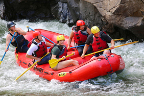
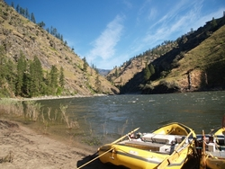
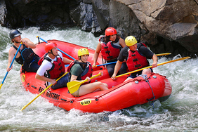
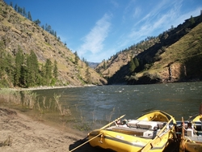

Company purpose: Whitewater rafting is a type of recreation that involves navigating a non-motorized watercraft down free flowing rivers. Mission: Whitewater rafting is a type of recreation that involves navigating a non-motorized watercraft down free flowing rivers. Creed: Whitewater rafting is a type of recreation that involves navigating a non-motorized watercraft down free flowing rivers. Motto: Whitewater rafting is a type of recreation that involves navigating a non-motorized watercraft down free flowing rivers.
 


